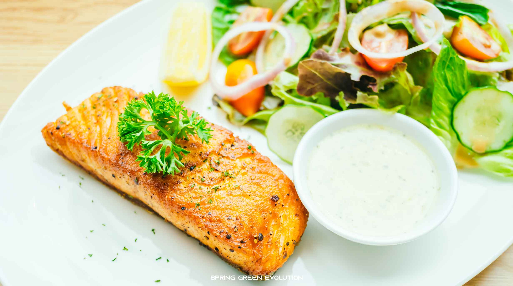
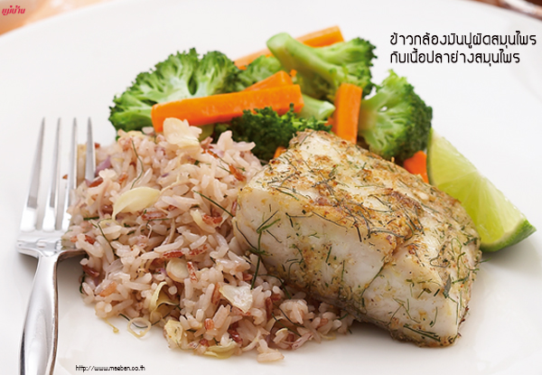
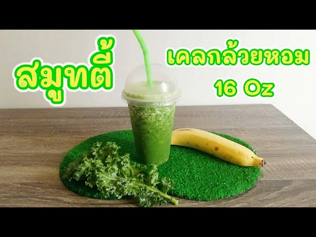

|
4 เมนูคลีนที่แนะนำ
|
ประโยชน์ ให้โปรตีนสูงจากแซลม่อน่ และวิตามิน แร่ธาตุจากผักใบเขียวหลากสี ช่วยให้อิ่มท้องนาน |
 |
ประโยชน์ ไข่เป็นแหล่งโปรตีนคุณภาพดี การนำไปตุ๋นกับผักรวมทำให้ได้อาหารคลีนที่มีประโยชน์ อิ่มท้อง และได้สารอาหารจากผักหลากหลาย |
.jpg) |
ประโยชน์ ข้าวกล้องมีใยอาหารสูง ช่วยระบบขับถ่าย ปลาอุดมไปด้วยโอเมก้า-3 ที่ดีต่อสุขภาพหัวใจและหลอดเลือด ส่วนผักนึ่งเพิ่มวิตามินและแร่ธาตุโดยไม่ต้องกังวลเรื่องแคลอรีที่เพิ่มขึ้น |
 |
ประโยชน
|
 |